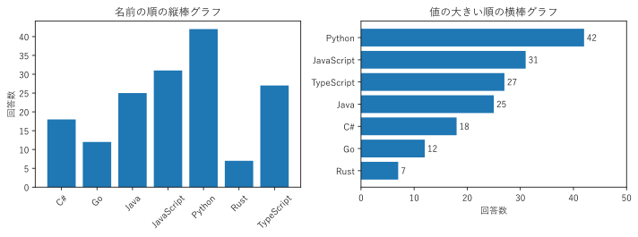
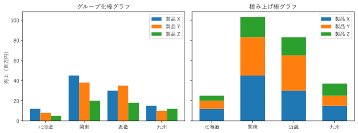
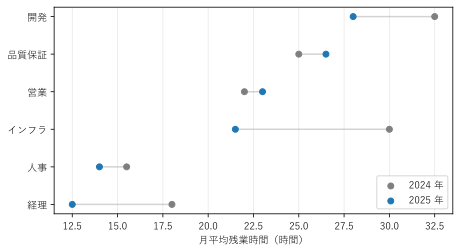
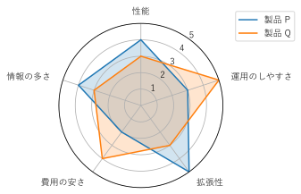

第 3 章 量を比較する
カテゴリごとの量を比べることは、可視化の最も基本的な目的である。この章では、棒グラフとその変形、ドットプロット、レーダーチャートを扱う。
棒グラフ
棒グラフは、カテゴリ（質的データ）ごとの量（量的データ）を、棒の長さで表すグラフである。売上、件数、回答数のように、比例尺度の量を比べるのに向いている。
図 6 は、架空の社内アンケート「主に使うプログラミング言語」の回答数を、2 通りの棒グラフで描いたものである。

図 6 名前の順の縦棒グラフ（左）と、値の大きい順の横棒グラフ（右）
左の図は名前の順に並べているため、どの言語が何番目に多いかを読み取るには、棒の高さを見比べる必要がある。右の図は値の大きい順に並べているため、順位が一目で分かる。また、横棒グラフはカテゴリ名を横書きのまま置けるので、名前が長くても読みやすい。
棒グラフを描くときは、次の点に注意する。
軸を 0 から始める。棒グラフは棒の長さで値を表すので、軸が 0 から始まらないと、長さの比が値の比と一致しなくなる（第 14 章で例を示す）。
並べ方を決める。カテゴリに自然な順序（時間、順序尺度の段階など）がなければ、値の順に並べる。自然な順序があれば、その順序を優先する。
値を書き添える。正確な値が重要な場合は、棒の先に値を書く。matplotlib では
Axes.bar_label()を使う。
25def create_figure() -> Figure:
26 """並べ替えない縦棒グラフと、並べ替えた横棒グラフを描く."""
27 fig, (ax_left, ax_right) = plt.subplots(1, 2, figsize=(10, 3.8))
28
29 # 左: 名前の順（アルファベット順）の縦棒グラフ
30 ax_left.bar(list(ANSWERS), list(ANSWERS.values()), color="C0")
31 ax_left.set_title("名前の順の縦棒グラフ")
32 ax_left.set_ylabel("回答数")
33 ax_left.tick_params(axis="x", labelrotation=45)
34
35 # 右: 値の大きい順の横棒グラフ。上から大きい順に並ぶように、
36 # 小さい順に並べてから barh に渡す
37 items = sorted(ANSWERS.items(), key=lambda item: item[1])
38 names = [name for name, _ in items]
39 counts = [count for _, count in items]
40 bars = ax_right.barh(names, counts, color="C0")
41 ax_right.bar_label(bars, padding=3) # 棒の先に値を書く
42 ax_right.set_title("値の大きい順の横棒グラフ")
43 ax_right.set_xlabel("回答数")
44 ax_right.set_xlim(0, 50)
45
46 fig.tight_layout()
47 return fig
barh() は、下から上へ順に棒を描く。そのため、値の大きい順に上から並べるには、小さい順に並べ替えたデータを渡す。
サンプルの全体：ch03_bar.py
グループ化棒グラフと積み上げ棒グラフ
カテゴリが 2 段階ある場合（地域ごと、さらに製品ごと、など）は、棒を横に並べるグループ化棒グラフか、棒を積み上げる積み上げ棒グラフを使う（図 7）。

図 7 同じデータのグループ化棒グラフ（左）と積み上げ棒グラフ（右）
2 つのグラフは、比べやすいものが異なる。
比べるもの |
グループ化棒グラフ |
積み上げ棒グラフ |
|---|---|---|
同じ地域の中の製品どうし |
比べやすい（棒が隣り合う） |
比べにくい |
地域ごとの合計 |
比べにくい（頭の中で足す必要がある） |
比べやすい（棒の高さ） |
地域をまたいだ同じ製品 |
比べられる（すべての棒が 0 から始まる） |
一番下の製品だけ比べやすい |
積み上げ棒グラフでは、一番下の区分（製品 X）以外は棒の始まる高さがそろっていない。そのため、例えば製品 Y の売上を関東と近畿で比べるのは難しい。合計と内訳の両方を正確に見せたい場合は、合計の棒グラフとグループ化棒グラフを別々に描くとよい。
23def create_figure() -> Figure:
24 """グループ化棒グラフと積み上げ棒グラフを並べて描く."""
25 fig, (ax_left, ax_right) = plt.subplots(1, 2, figsize=(10, 3.8),
26 sharey=True)
27 positions = np.arange(len(REGIONS))
28 width = 0.27
29
30 # 左: グループ化棒グラフ。製品ごとに棒の位置を少しずつずらす
31 for index, (product, values) in enumerate(SALES.items()):
32 offset = (index - 1) * width
33 ax_left.bar(positions + offset, values, width, label=product)
34 ax_left.set_title("グループ化棒グラフ")
35 ax_left.set_ylabel("売上（百万円）")
36
37 # 右: 積み上げ棒グラフ。bottom に、それまでの製品の合計を渡す
38 bottom = np.zeros(len(REGIONS))
39 for product, values in SALES.items():
40 ax_right.bar(positions, values, 0.6, bottom=bottom, label=product)
41 bottom += values
42 ax_right.set_title("積み上げ棒グラフ")
43
44 for ax in (ax_left, ax_right):
45 ax.set_xticks(positions, REGIONS)
46 ax.legend()
47 fig.tight_layout()
48 return fig
グループ化棒グラフでは、製品ごとに棒の位置を offset だけずらして描く。積み上げ棒グラフでは、bottom 引数に、それまでに描いた製品の合計を渡す。
サンプルの全体：ch03_grouped_stacked.py
ドットプロット
ドットプロットは、カテゴリごとの値を、棒の代わりに点の位置で表すグラフである [Cleveland1985]。棒を描かないので、図がすっきりし、多くのカテゴリや複数の時点を並べやすい。
図 8 は、架空の 6 部署の月平均残業時間を、2024 年と 2025 年で比べたものである。2 つの点を線で結ぶことで、増えたか減ったか、どれだけ変わったかが分かる。

図 8 2 時点の値を比べるドットプロット
ドットプロットは位置で値を表すため、棒グラフと違って、軸を 0 から始めなくても値の比較を誤らせにくい。そのため、値の差が小さいデータの比較にも向いている。ただし、軸の範囲を狭くすると差が大きく見えることは変わらないので、範囲は目的に合わせて決める。
26def create_figure() -> Figure:
27 """2 時点の値を並べたドットプロットを描く."""
28 # 2025 年の値の小さい順に並べる（下から上へ）
29 items = sorted(OVERTIME.items(), key=lambda item: item[1][1])
30 names = [name for name, _ in items]
31 fig, ax = plt.subplots(figsize=(6.5, 3.6))
32 for row, (_, (before, after)) in enumerate(items):
33 ax.plot([before, after], [row, row], color="lightgray", zorder=1)
34 ax.scatter([v[0] for _, v in items], range(len(items)), color="C7",
35 label="2024 年", zorder=2)
36 ax.scatter([v[1] for _, v in items], range(len(items)), color="C0",
37 label="2025 年", zorder=2)
38 ax.set_yticks(range(len(items)), names)
39 ax.set_xlabel("月平均残業時間（時間）")
40 ax.grid(axis="x", alpha=0.3)
41 ax.legend(loc="lower right")
42 fig.tight_layout()
43 return fig
サンプルの全体：ch03_dot_plot.py
レーダーチャート
レーダーチャートは、複数の評価項目を放射状の軸に割り当て、各項目の値を結んだ多角形で表すグラフである。製品の評価や、個人のスキルの評価など、複数の項目の「バランス」を見せるのに使われる（図 9）。


図 9 2 つの製品の評価を比べたレーダーチャート
製品 P は性能と拡張性に、製品 Q は運用のしやすさと費用の安さに優れていることが、多角形の形から読み取れる。
一方、レーダーチャートには次の弱点がある。
多角形の面積や形が、軸の並べ方で変わる。同じデータでも、項目の順序を入れ替えると印象が変わる。面積を総合評価として読むのは誤りである。
項目の尺度をそろえる必要がある。単位の異なる項目（価格と性能など）は、点数などにそろえないと比較できない。また、すべての項目で「外側ほど良い」となるように向きをそろえる。図 9 で「費用」ではなく「費用の安さ」としているのはこのためである。
系列が多いと読めない。多角形が 3 つ以上重なると、区別が難しくなる。
正確な比較が目的なら、グループ化棒グラフや、項目ごとのドットプロットの方が読み取りやすい。レーダーチャートは、少数の系列の全体的な傾向を示す場合に限って使うとよい。
22def create_figure() -> Figure:
23 """2 製品の評価をレーダーチャートで描く."""
24 # 各評価項目の角度。多角形を閉じるため、最初の角度を末尾に加える
25 angles = np.linspace(0, 2 * np.pi, len(AXES), endpoint=False)
26 closed_angles = np.append(angles, angles[0])
27
28 fig = plt.figure(figsize=(4.8, 4.8))
29 ax = fig.add_subplot(projection="polar")
30 assert isinstance(ax, PolarAxes) # 極座標専用のメソッドを使うため
31 for name, scores in SCORES.items():
32 values = scores + scores[:1]
33 ax.plot(closed_angles, values, label=name)
34 ax.fill(closed_angles, values, alpha=0.2)
35 ax.set_theta_offset(np.pi / 2) # 最初の項目を真上に置く
36 ax.set_theta_direction(-1) # 時計回りに並べる
37 ax.set_xticks(angles, AXES)
38 # 項目名が円に重ならないよう、右側の項目は左揃え、左側の項目は右揃えにする
39 for label, angle in zip(ax.get_xticklabels(), angles):
40 x = np.sin(angle)
41 label.set_horizontalalignment(
42 "left" if x > 0.1 else "right" if x < -0.1 else "center")
43 ax.set_ylim(0, 5)
44 ax.set_yticks([1, 2, 3, 4, 5])
45 ax.set_rlabel_position(36) # 目盛りの数値を項目の間に置く
46 ax.legend(loc="upper left", bbox_to_anchor=(1.05, 1.1))
47 fig.tight_layout()
48 return fig
matplotlib では、極座標の Axes``（``projection="polar"）に折れ線を描いてレーダーチャートを作る。多角形を閉じるため、最初の点を末尾にもう一度加えている。
サンプルの全体：ch03_radar.py
まとめ
カテゴリごとの量の比較には、棒グラフが基本である。軸は 0 から始め、自然な順序がなければ値の順に並べる。
2 段階のカテゴリは、内訳の比較ならグループ化棒グラフ、合計の比較なら積み上げ棒グラフを使う。
ドットプロットは、位置で値を表すため、多くのカテゴリや 2 時点の比較に向く。
レーダーチャートは、軸の並べ方で印象が変わる。正確な比較には向かない。